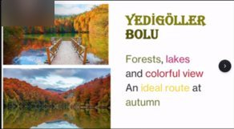
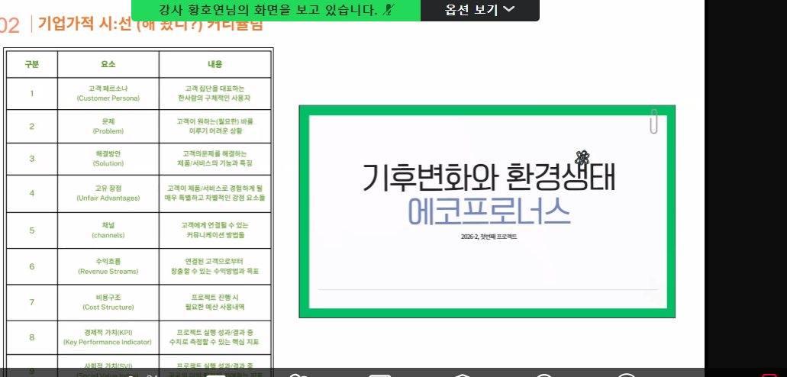
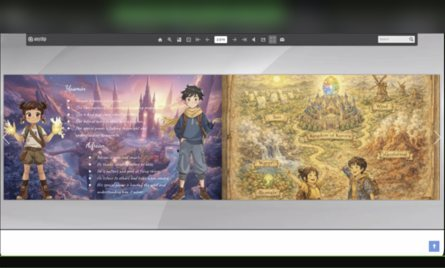
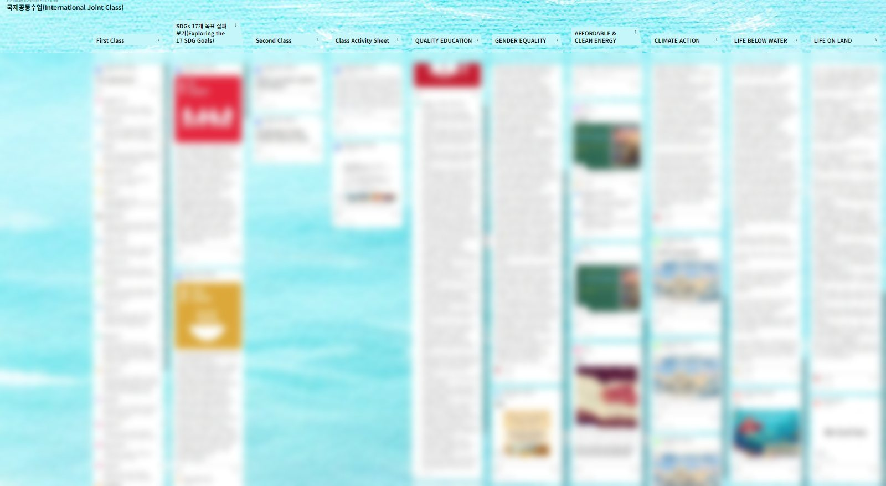

한국–튀르키예 국제공동수업 · 6차시
찬란한 두 도시의 밤
서울과 이스탄불, 두 도시가 같은 밤을 밝히고 있어요.
질문 하나
이 빛은 모두어디에서 왔을까요?
찬란한 두 도시의 밤, 우리는 어떤 에너지를 쓸까?
한국
튀르키예
화석연료원자력수력신재생 · 풍력/태양광지열·바이오
2024년 발전량 비중 · 한국: 산업통상자원부 · 튀르키예: Ember
에너지 믹스 Energy Mix
두 나라의 에너지 출처는어떻게 다를까?

에너지 기업가 정신 Energy Entrepreneurship
문제를 기회로,네 가지 색의 해답으로
모둠마다 한 트랙을 골라 양국 친구들과 함께 만들어요.
스크롤
이 수업의 질문
에너지를 아끼는 데서 멈추지 않고,
가치를 만드는 기회로 바꿀 수 있을까?
프로그램 3 · 데이터와 에듀테크로 빚어낸 지속가능성: 4색(色) 글로벌 그린 창업기
에너지소양 주제에너지믹스사회경제에너지안보무탄소 에너지
한국–튀르키예 발전량 비교(에너지믹스), 그린 벤처의 비용 절감·수익 모델(사회경제), 천연가스·석탄 수입 의존(에너지안보), 원자력과 재생에너지가 채우는 나머지 절반(무탄소 에너지)을 다뤄요.
GOAL 1 · 데이터 기반 분석
두 나라 에너지 믹스 비교
공공데이터(IEA, 빅카인즈)로 한국과 튀르키예의 에너지 믹스를 비교하고, 에너지 전환의 기회와 위기를 찾아요.
GOAL 2 · 솔루션과 연대
에너지 기업가 정신 + 공동 선언문
에너지 기업가 정신을 우리 말로 정의하고, SDGs 7·13과 연결해 양국 공동 선언문을 써요.
GOAL 3 · 융합 산출물
4색 트랙 중 하나를 완성
동화책 · 칼럼과 포스터 · 홍보 영상 · 그린 벤처 사업계획서 가운데 하나를 골라 만들어요.
GOAL 4 · 데모데이
피칭하고, 평가하고, 성찰하기
한-튀르키예 데모데이에서 피칭하고, Padlet·Mentimeter로 서로 평가한 뒤 성찰 일지를 써요.
6차시, 3개 블록 (고등학교 50분 × 2차시씩)
양국 에너지 현황 탐구 · 기업가 정신 발굴1~2차시 · 발전량 데이터 비교, 설비용량 vs 발전량, SDGs 7·13, 공동 선언문, 트랙 선택
기후 행동 융합 산출물 창작3~4차시 · 40분 + 35분 집중 창작, Padlet 상호 피드백
그린 벤처 글로벌 데모데이5~6차시 · 실시간 피칭(시차 6시간), 동료 피드백, 성찰과 다짐
성취기준 · 2022 개정 교육과정
[10통과2-02-06] 에너지 효율의 의미와 중요성을 이해하고, 지속가능한 발전과 지구 환경 문제 해결에 신재생 에너지 기술을 활용하는 방안을 탐색할 수 있다. → 1~2차시 발전량 탐구 · 트랙 A·C 과학적 타당성
[10통과2-03-02] 빅데이터를 과학기술사회에서 사용하고 있는 사례를 조사하고, 빅데이터 활용의 장점과 문제점을 추론할 수 있다. → 1~2차시 공공데이터(Ember·IEA·빅카인즈) 활용
[12기가05-04] 친환경 에너지의 종류와 원리, 활용 사례를 탐구하며, 에너지 전환과 관련된 공학적 문제를 해결하는 과정에서 창의적 자신감과 태도를 갖는다. → 트랙 D 사업계획서 ‘과학·공학 원리’
[10공국2-03-02] 논증 요소에 따른 분석을 바탕으로 효과적으로 내용을 조직하여 논증하는 글을 쓴다. → 트랙 B 칼럼 · 트랙 D 사업계획서 · 데모데이 피칭
[12기지04-01] 지속가능발전목표(SDGs)의 의미를 이해하고, 이의 실천과 관련한 지역 사례들을 조사하여 환경적, 경제적, 사회적 측면에서 통합적으로 분석한다. → 1~2차시 SDGs·공동 선언문 · 트랙 A·C · 성찰
지도안의 연계 교과: 통합과학2 · 공통국어2 · 기술·가정 · 기후변화와 지속가능한 세계 — 모둠별 4색 트랙 선택형 한국-튀르키예 국제공동 프로젝트 학습(PBL). 모둠이 고른 트랙에 따라 평가에 쓰는 성취기준이 달라요(평가 표 참고).
평가 관점(지도안) — 산출물의 외형적 완성도보다 ① 데이터 근거의 타당성 ② 양국 협력과 상호 피드백 반영 과정 ③ 가치 제안의 설득력을 중심으로 평가.
시간 배분 — 지도안 원안은 블록당 90·90·85분(45분×2 기준). 이 페이지는 고교 50분×2 = 100분으로 다시 나눔: 1~2차시 활동 1 35→40분(설비용량 vs 발전량 미니 활동 포함)·활동 3 15→20분 / 3~4차시 집중 창작 75분을 40+35분으로 나누고 4차시 정리(Padlet 피드백) 5→15분 / 5~6차시 피칭 60→65분·성찰 10→15분. 진행기에 ‘1차시 끝’ 경계 카드를 넣음. 블록 수업이 아니어도 차시 경계에서 끊어 쓰면 됨.
차시별 에듀테크 — 1~2차시: IEA Data Explorer(보조: Ember 데이터), BIG Kinds, Padlet, DeepL/Google Translate(실시간 다국어 패들렛 보드) · 3~4차시: Canva AI/Whiteboard, Storyboard Maker, Google Docs · 5~6차시: Canva Presentation, Mentimeter/Google Form, Zoom/Teams
시간 배분 — 지도안 원안은 블록당 90·90·85분(45분×2 기준). 이 페이지는 고교 50분×2 = 100분으로 다시 나눔: 1~2차시 활동 1 35→40분(설비용량 vs 발전량 미니 활동 포함)·활동 3 15→20분 / 3~4차시 집중 창작 75분을 40+35분으로 나누고 4차시 정리(Padlet 피드백) 5→15분 / 5~6차시 피칭 60→65분·성찰 10→15분. 진행기에 ‘1차시 끝’ 경계 카드를 넣음. 블록 수업이 아니어도 차시 경계에서 끊어 쓰면 됨.
차시별 에듀테크 — 1~2차시: IEA Data Explorer(보조: Ember 데이터), BIG Kinds, Padlet, DeepL/Google Translate(실시간 다국어 패들렛 보드) · 3~4차시: Canva AI/Whiteboard, Storyboard Maker, Google Docs · 5~6차시: Canva Presentation, Mentimeter/Google Form, Zoom/Teams
데이터 탐구 · Energy Mix
두 나라의 전력은
무엇으로 만들어질까요?
2024년 한 해 동안 실제로 만든 전기(발전량)를 발전원별로 나눈 비율이에요. 스크롤하면 도넛이 자라고, 아래 버튼으로 발전원을 하나씩 골라 비교할 수 있어요.
한국 Korea · 2024 발전량
원자력 1위, 가스·석탄이 뒤를 이어요
화석연료(석탄 28.1·가스 28.1) 56.2%원자력 31.7%신재생* 10.6%기타 약 1.5%
튀르키예 Türkiye · 2024 발전량
석탄이 1위, 재생에너지가 절반 가까이
화석연료(석탄 35.6·가스 18.5 등) 54.4%수력 21.9%풍력·태양광 18.2%지열·바이오 5.5%원자력 0%
화석연료 비중은 몇 %p 차이일까요?
56.2% − 54.4% = 1.8%p. 두 나라 모두 전기의 절반 넘게를 화석연료로 만들어요. 차이는 거의 없어요!
재생에너지 비중은 몇 배 차이일까요?
튀르키예: 수력 21.9 + 풍력·태양광 18.2 + 지열·바이오 5.5 = 45.6%. 한국 신재생 10.6%. 45.6 ÷ 10.6 ≈ 4.3배(약 4배)예요. 한국 ‘신재생’에는 연료전지 같은 신에너지도 들어 있어서, 재생에너지만 따지면 차이는 조금 더 커져요.
화석 비중이 비슷한데, 무엇이 다를까요?
남은 절반 가까이를 채우는 방법이 달라요. 한국은 원자력(31.7%), 튀르키예는 재생에너지(45.6%). 그런데 탄소를 내지 않는 전원(원자력+재생)을 합치면 한국 약 42%, 튀르키예 약 46%로 꽤 비슷해요.
왜 이렇게 다를까요?
한국: 큰 강과 높은 산이 적어 수력 자원이 작고, 원전 기술력이 있어 원자력이 기저 전력을 맡아요. 제조업이 많아 전기 수요가 커요.
튀르키예: 산악 지형의 수력, 에게해·마르마라 연안의 바람, 남부·중부 아나톨리아의 햇빛, 지열을 살려요. 하지만 천연가스는 거의 전량, 석탄 화력 연료도 상당 부분(수입 유연탄)을 들여와요 → 에너지안보 과제예요. 한국도 석탄·가스를 대부분 수입하니 같은 고민이 있어요.
튀르키예: 산악 지형의 수력, 에게해·마르마라 연안의 바람, 남부·중부 아나톨리아의 햇빛, 지열을 살려요. 하지만 천연가스는 거의 전량, 석탄 화력 연료도 상당 부분(수입 유연탄)을 들여와요 → 에너지안보 과제예요. 한국도 석탄·가스를 대부분 수입하니 같은 고민이 있어요.
더 생각해 보기 · 수력은 해마다 같을까요?
튀르키예 수력 비중은 2019년 29.5% → 2024년 21.9% → 2025년 16.2%로 크게 달라졌어요(Ember). 비가 많이 온 해와 가문 해의 차이예요. 그래서 데이터를 볼 때는 기준 연도를 꼭 적어야 해요.
출처 · 2024년 발전량 기준 · 한국: 산업통상자원부 보도자료 「2024년 에너지수급동향」(2025. 5.) — 총 595.6TWh, 원자력 31.7%, 가스 28.1%, 석탄 28.1%, 신재생 10.6%(잠정치). ‘기타 약 1.5%’는 네 값을 100%에서 뺀 값이에요. · 튀르키예: Ember 「Türkiye Electricity Review 2025」·Ember 연간 전력 데이터 — 총 341.2TWh, 석탄 35.6%, 가스 18.5%, 기타 화석 0.3%, 수력 21.9%, 풍력 10.7%, 태양광 7.5%, 지열 등 3.0%, 바이오 2.5%, 원자력 0%. 원자력: 튀르키예 첫 원전 아쿠유 1호기는 2026년 현재 시운전 단계(상업운전 전)예요. 수업 때 다시 확인해 봅시다.
* 한국 ‘신재생’은 법률상 신에너지(연료전지 등)를 포함해 국제 통계의 ‘재생에너지(Renewables)’보다 조금 넓어요.
수업 PPT 수치와 다른 이유 — PPT 「데이터 탐구 1·2」는 한국 화석 60·원자력 30·신재생 10%, 튀르키예 화석 45·수력 30·풍력/태양광 25%이며 기준 연도·지표가 없음. 튀르키예 값은 2024년 11월 말 설비용량 구성(수력 28·가스 21.4·석탄 18.9·태양광 16.7·풍력 10.8%)과 거의 같아, 한국은 발전량·튀르키예는 설비용량이 섞인 것으로 보임 → 그 결과 PPT의 정답(화석 15%p 차이, 재생 5.5배)이 실제(1.8%p, 약 4배)와 달라짐. 이 페이지는 두 나라 모두 2024년 발전량으로 통일했고, 차이 자체를 아래 미니 활동 「설비용량 vs 발전량」의 소재로 씀.
한 나라 한 출처 — 같은 해·같은 나라도 출처마다 값이 다름(예: Ember의 한국 2024년 값은 자가발전까지 넣어 총 627.8TWh·화석 59.5%·원자력 30.1%). 한국은 정부 통계(산업부), 튀르키예는 Ember로 고정. 학생이 IEA에서 찾은 값이 조금 달라도 ‘지표·연도·출처’를 적었으면 정답으로 인정.
IEA 데이터 브라우저: 국가(Korea / Türkiye) → Electricity generation by source. 활동지 1의 ‘기준 연도·출처·지표(발전량)’ 칸을 반드시 채우게 하기. 양국의 지리적·환경적 차이를 존중하도록 안내(지도안 유의점).
한 나라 한 출처 — 같은 해·같은 나라도 출처마다 값이 다름(예: Ember의 한국 2024년 값은 자가발전까지 넣어 총 627.8TWh·화석 59.5%·원자력 30.1%). 한국은 정부 통계(산업부), 튀르키예는 Ember로 고정. 학생이 IEA에서 찾은 값이 조금 달라도 ‘지표·연도·출처’를 적었으면 정답으로 인정.
IEA 데이터 브라우저: 국가(Korea / Türkiye) → Electricity generation by source. 활동지 1의 ‘기준 연도·출처·지표(발전량)’ 칸을 반드시 채우게 하기. 양국의 지리적·환경적 차이를 존중하도록 안내(지도안 유의점).
미니 활동 · 10분 · 숫자 탐정
같은 나라, 왜 숫자가 두 가지일까요?
수업 PPT의 튀르키예 수치(화석 45 · 수력 30 · 풍력/태양광 25)는 위 발전량과 달라요. 버튼을 바꿔 가며 어느 쪽과 닮았는지 찾아봅시다.
화석연료원자력수력신재생 · 풍력/태양광지열·바이오·기타기타
① PPT의 튀르키예 45 · 30 · 25는 어느 쪽과 닮았나요?
설비용량(화석 약 40 · 수력 28 · 풍력/태양광 약 28)과 닮았어요. 발전량(54 · 22 · 18)과는 많이 달라요. 설비용량은 “발전소를 얼마나 크게 지어 두었나(GW)”, 발전량은 “1년 동안 실제로 전기를 얼마나 만들었나(TWh)”예요.
② 원자력·석탄은 설비 비중보다 발전 비중이 커요. 왜일까요?
밤낮없이 거의 쉬지 않고 돌리는 발전소라서 같은 1GW로도 1년에 전기를 많이 만들어요. 태양광은 해가 있을 때만, 풍력은 바람이 불 때만 돌아서 설비에 비해 발전량이 작아요.
| 발전원 | 설비 비중 | 발전 비중 | 발전 ÷ 설비 |
|---|---|---|---|
| 한국 원자력 | 17.0% | 31.7% | 약 1.9 |
| 튀르키예 석탄 | 18.9% | 35.6% | 약 1.9 |
| 한국 신재생 | 22.7% | 10.6% | 약 0.47 |
| 튀르키예 태양광 | 16.7% | 7.5% | 약 0.45 |
③ 계산해 봅시다 · 1GW 발전소는 1년에 전기를 얼마나 만들까요?
1년 = 8,760시간. 설비이용률 = 실제 발전량 ÷ (설비용량 × 8,760시간).
원자력(이용률 약 85%): 1GW × 8,760h × 0.85 ≈ 7.4TWh
태양광(이용률 약 15%): 1GW × 8,760h × 0.15 ≈ 1.3TWh → 약 5.7배 차이!
이용률 85%·15%는 계산을 위한 어림값이에요(교육용 단순화). 실제 값은 해마다·지역마다 달라요.
원자력(이용률 약 85%): 1GW × 8,760h × 0.85 ≈ 7.4TWh
태양광(이용률 약 15%): 1GW × 8,760h × 0.15 ≈ 1.3TWh → 약 5.7배 차이!
이용률 85%·15%는 계산을 위한 어림값이에요(교육용 단순화). 실제 값은 해마다·지역마다 달라요.
④ 데이터를 읽을 때 꼭 확인할 세 가지는?
① 무엇을 셌나(설비용량 GW인가, 발전량 TWh인가) ② 기준 연도 ③ 출처와 분류(한국 ‘신재생’은 신에너지 포함). 활동지 1에 세 가지를 모두 적어요.
진행(10분, 활동 1 안) — ① PPT 수치를 띄우고 “이 숫자는 무엇을 센 걸까?” (1분) ② 버튼으로 설비용량 ↔ 발전량 비교, 모둠별로 ①번 답 말하기 (3분) ③ ②번 표의 ‘발전 ÷ 설비’ 계산, 원자력·석탄 vs 태양광 차이의 이유 토의 (4분) ④ ④번 세 가지를 활동지 1에 적고 마무리 (2분). 시간이 남으면 ③번 계산.
예상 오개념 — “설비가 많으면 전기도 그만큼 많이 만든다”, “재생에너지 설비가 22%면 전기의 22%가 재생에너지다”. 정리 발문: “태양광을 늘리는 것만큼, 언제 만든 전기를 언제 쓰게 할지(저장·계통)도 중요하겠지?”(→ PPT의 튀르키예 과제 ‘계통망 안정화’와 연결)
수치 출처 — 한국 설비용량(2024년 말, 총 153.1GW): 가스 30.3·석탄 26.3·신재생 22.7·원자력 17.0%, 기타 3.7%는 100%에서 뺀 값 — 산업통상자원부 「2024년 에너지수급동향」(2025. 5.). 튀르키예 설비용량(2024년 11월 말, 약 115GW): 수력 28·가스 21.4·석탄 18.9·태양광 16.7·풍력 10.8·지열 1.5·기타 2.7% — 유럽환경청(EEA) 「Europe’s environment 2025」 튀르키예 국가 페이지(해당 문장의 원자료는 표기되지 않음 — 수업 전 튀르키예 에너지천연자원부·TEİAŞ 자료로 대조 권장). 발전량은 위 출처와 같음.
먼저 끝난 모둠 — 한국 2024년 신재생 63.2TWh를 설비 34.7GW로 나눠 이용률 어림하기(63.2 ÷ (34.7 × 8.76) ≈ 21%).
예상 오개념 — “설비가 많으면 전기도 그만큼 많이 만든다”, “재생에너지 설비가 22%면 전기의 22%가 재생에너지다”. 정리 발문: “태양광을 늘리는 것만큼, 언제 만든 전기를 언제 쓰게 할지(저장·계통)도 중요하겠지?”(→ PPT의 튀르키예 과제 ‘계통망 안정화’와 연결)
수치 출처 — 한국 설비용량(2024년 말, 총 153.1GW): 가스 30.3·석탄 26.3·신재생 22.7·원자력 17.0%, 기타 3.7%는 100%에서 뺀 값 — 산업통상자원부 「2024년 에너지수급동향」(2025. 5.). 튀르키예 설비용량(2024년 11월 말, 약 115GW): 수력 28·가스 21.4·석탄 18.9·태양광 16.7·풍력 10.8·지열 1.5·기타 2.7% — 유럽환경청(EEA) 「Europe’s environment 2025」 튀르키예 국가 페이지(해당 문장의 원자료는 표기되지 않음 — 수업 전 튀르키예 에너지천연자원부·TEİAŞ 자료로 대조 권장). 발전량은 위 출처와 같음.
먼저 끝난 모둠 — 한국 2024년 신재생 63.2TWh를 설비 34.7GW로 나눠 이용률 어림하기(63.2 ÷ (34.7 × 8.76) ≈ 21%).
수업 진행
차시별로 한 장면씩
← → 키나 아래 버튼으로 넘겨요. 교사 모드를 켜면 발문·유의점이 보여요. 시간은 고등학교 50분 수업 기준이고, 차시가 끝나는 곳에 ‘○차시 끝’ 카드가 있어요.
찬란한 두 도시의 밤,
우리는 어떤 에너지를 쓸까?
양국 대표 도시 야경(연구회가 그린 그림)과 전력 소비 비교 제시. 양국의 지리적·환경적 차이를 존중하도록 가이드.
두 나라의 에너지 출처
(에너지 믹스)는 어떻게 다를까?
오늘의 목표: 한-튀르키예 전력 데이터를 기준 연도·지표와 함께 비교하고, 다음 시간에 공동 선언문을 함께 써요.
활동 11차시 · 발전량 데이터 탐구 + 설비 vs 발전
활동 22차시 · 기업가 정신 정의 + SDGs
활동 32차시 · 공동 선언문 + 트랙 선택
데이터 탐구 1 · 한국의 전력 (2024년 발전량)
원자력 31.7%18년 만에 1위 · 기저 전력
가스 28.1% · 석탄 28.1%화석연료 합계 56.2%
신재생 10.6%처음으로 10% 넘음
원자력이 가장 많고, 가스와 석탄이 비슷하게 뒤를 잇고 있어요.
출처: 산업통상자원부 「2024년 에너지수급동향」(2025. 5.) · 총 발전량 595.6TWh
데이터 탐구 2 · 튀르키예의 전력 (2024년 발전량)
석탄 35.6%가장 큰 발전원
수력 21.9%산악 지형의 강점
풍력 10.7% · 태양광 7.5%빠르게 늘어나는 중
천연가스 18.5%거의 전량 수입 → 에너지안보
원자력은 아직 0%예요(첫 원전 아쿠유 1호기 시운전 중).
출처: Ember 「Türkiye Electricity Review 2025」·연간 전력 데이터 · 총 발전량 341.2TWh
두 나라 겹쳐 비교하기 →수업 PPT의 튀르키예 숫자 45 · 30 · 25,
무엇을 센 걸까요?
발전소를 지어 둔 크기(설비용량, GW)와 1년 동안 실제로 만든 전기(발전량, TWh)는 비율이 달라요. 버튼을 바꿔 가며 비교해 봅시다.
설비용량 vs 발전량 미니 활동 열기 →PPT 원래 수치는 설비용량에 가까움(튀르키예 2024년 11월 말 설비: 수력 28·가스 21.4·석탄 18.9·태양광 16.7·풍력 10.8%). 진행 순서·예상 오개념·수치 출처는 「에너지 믹스」 아래 미니 활동의 교사 메모 참고. 핵심 정리: “설비 비중 ≠ 발전 비중. 원자력·석탄은 이용률이 높고, 태양광·풍력은 낮다.”
직접 찾아봅시다: 공공데이터
Ember·IEA에서 발전원별 발전량을, 빅카인즈에서 두 나라 에너지 기사를 찾아 활동지 1에 적어요. 지표(발전량)·기준 연도·출처 세 가지를 꼭!
Ember 튀르키예 IEA 데이터 브라우저 빅카인즈 Padlet DeepLEmber·IEA·빅카인즈 조사 15분
3개 언어 용어 카드 (한국어 · English · Türkçe)
| 한국어 | English | Türkçe |
|---|---|---|
| 석탄 | Coal | Kömür |
| 천연가스 | Natural gas | Doğal gaz |
| 원자력 | Nuclear power | Nükleer enerji |
| 수력 | Hydropower | Hidroelektrik |
| 풍력 / 태양광 | Wind / Solar | Rüzgâr / Güneş enerjisi |
| 지열 | Geothermal | Jeotermal |
| 재생에너지 | Renewable energy | Yenilenebilir enerji |
| 발전량 / 설비용량 | Generation / Installed capacity | Üretim / Kurulu güç |
| 기후 행동 | Climate action | İklim eylemi |
전문 용어는 영어/한국어/튀르키예어로 병기 안내(지도안). 튀르키예어 표기는 파트너 교사와 한 번 더 확인. 양국 언어 장벽 극복을 위해 실시간 다국어 패들렛 보드 운영. 검색이 막히는 모둠에는 이 페이지 「에너지 믹스」 도넛 수치를 ‘기준값’으로 주고 기사 찾기에 집중시킴.
각 나라의 기회와 과제는 무엇일까요?
한국 · 위기를 기회로
장점: 안정적인 대규모 전력 공급망, 원전 기술력.
과제: 화석연료 56% → 탄소 감축 시급, 신재생 비율 확대, 석탄·가스 수입 의존.
튀르키예 · 자원을 혁신으로
장점: 수자원·바람·햇빛·지열, 재생에너지 46%.
과제: 천연가스·석탄 수입 의존(에너지안보), 날씨에 따라 출렁이는 수력·풍력·태양광의 계통 안정화.
PPT의 분석 더 보기
한국은 배터리·ESS·스마트 그리드 같은 하드웨어 제조 기술로 전환 인프라를 만들 수 있어요. 튀르키예는 날씨에 따라 변동성이 큰 재생에너지의 계통 안정화 기술이 부족한 점이 과제예요.
관찰 기준(1차시): 데이터 분석 결과를 근거로 양국의 에너지 전환 기회·위기 요인을 구체적으로 도출하는가. 먼저 끝난 모둠: 다른 모둠 Padlet 게시물에 ‘기준 연도·지표가 적혀 있는지’ 확인 댓글 2개.
1차시 끝!
활동지 1을 저장하고, 조사한 수치(지표·연도·출처)를 Padlet에 올려 두세요. 다음 시간에는 이 데이터로 에너지 기업가 정신을 찾아요.
블록 수업이 아니면 여기서 끊음. 기기가 바뀌는 학교는 바닥글 위 「내 기록 모두 복사」로 모둠 공유 문서에 붙여 두게 하기.
에너지 기업가 정신이란?
에너지를 수동적으로 절약하는 데 그치지 않고, 기술과 혁신을 통해 경제적·사회적 가치 창출의 기회로 전환하는 것
Energy Entrepreneurship — 이번 프로젝트 전체를 꿰는 핵심 가치예요.
그린 스타트업 & 적정기술 벤치마킹
휴대용 태양광 램프
전력망이 닿지 않는 오지 마을에 빛을 제공해 교육과 안전 문제를 함께 해결.
폐기물 바이오가스
농업 부산물을 가스로 바꿔 지역 주민의 청정 조리 연료로 공급.
P2P 전력 거래 앱
남는 태양광 전력을 이웃과 스마트폰으로 직거래하는 소규모 스마트그리드.
이 사례들은 어떤 문제를 기회로 바꾸었나요?
자료: 해외 적정기술 및 그린 스타트업 사례집.
우리가 해결할 SDGs
07 · 모두를 위한 적정가격의 깨끗한 에너지
Affordable and Clean Energy — 저렴하고 신뢰할 수 있으며 지속가능한 현대적 에너지에 대한 접근 보장.
13 · 기후변화 대응
Climate Action — 기후변화와 그 영향을 방지하기 위한 긴급한 행동 실시.
활동 2: 우리 모둠의 ① 에너지 기업가 정신 정의 ② 핵심 해결 과제 ③ 해결 대상과 필요성을 적어요.
UN SDG 7 UN SDG 13활동지 2 작성 10분
활동지 2로 →
국경을 넘어 무엇을 약속할까요?
“우리 모둠은 글로벌 에너지 문제 해결을 위해 국경을 넘어 다음과 같이 실천하고 협력할 것을 다짐합니다.” 뒤에 이어질 핵심 약속 3~4문장을 써요. 한국 팀원과 튀르키예 팀원이 함께 서명해요.
선언문 작성 15분 (나머지 5분은 양국 서명·Padlet 공유)
공동 선언문 쓰러 가기 →
자료: 에코액션랩 선언문 양식. 관찰 기준: 양국 학생이 글로벌 에너지 문제를 함께 해결할 동반자임을 인식하고 구체적인 실천 다짐을 담았는가. 먼저 끝난 모둠: 선언문을 영어·튀르키예어로 옮겨 Padlet에 올리기.
우리 모둠의 트랙을 골라요
Track A에너지 SDGs 동화책
Track B신문 칼럼 & 비주얼 포스터
Track C기업가 정신 홍보 영상
Track D그린 벤처 사업계획서
역할 나누기: 시나리오 기획 · 데이터 조사 · 시각 디자인 · 다국어 번역(한국어/영어/튀르키예어) — 각자의 강점에 맞게!
4색 트랙 미리 보기 →자료: 트랙 선택 조사지. 다음 차시 집중 창작(40분 + 35분) 예고.
우리 작품은
누구에게 닿아야 할까요?
프로젝트 기획 의도와 타깃 독자 분석이 왜 필요한지 생각해 봐요. 대상이 분명해야 메시지가 힘을 가져요.
자료: 작성 가이드라인 및 예시. 트랙 A~D의 주요 구성 요소 확인 → 모둠별 세부 제작 절차·유의점 안내.
산출물 제작 핵심 가이드라인
타깃 독자 맞춤
감정적 호소를 넘어 대상을 명확히.
과학적 타당성
데이터(지표·연도·출처)와 공학적 원리에 기반.
다국어 지원
한국어, 영어, 튀르키예어 병기.
에듀테크 활용
Canva, CapCut 등 협업 툴 적극 사용.
Track A · 에너지 SDGs 동화책
[A-1] 주인공(한국 & 튀르키예 페르소나, 상징 동물)과 5단계 이야기 구성 → [A-2] 15장면 스토리보드(그림 스케치 + 한/영 대사)
발단
전개
위기
절정
결말
PPT 예시 S#11 — “드디어 우리 마을이 밝아졌어.” / “Finally, our village is bright.”
유의점: 교훈 전달에 치우치지 않고 과학적 타당성 확보.
Track B · 신문 칼럼 & 비주얼 포스터
[B-1] 양국 언론의 에너지 기사 프레이밍을 비교하고 비판적 논평 칼럼 쓰기 → [B-2] 강렬한 캐치프레이즈 + 이미지로 Canva 포스터 완성
빅카인즈 Canva유의점: 무료 오픈 소스 이미지 활용.
Track C · 에너지 기업가 정신 홍보 영상
[C-1] 타깃 시청자 설정 → 핵심 메시지 도출 → 내레이션 대본 → [C-2] 6장면 콘티(앵글, 자막, BGM) → CapCut/Canva로 편집하고 한/영/튀 자막 입히기
영상 유형: 숏폼(60~90초) 또는 캠페인 영상(2~3분)
CapCut Canva Video Veed.io유의점: 초상권 주의, 저작권 무료 음원 및 템플릿 활용. 자료: 영상 콘티 워크시트.
Track D · 그린 벤처 사업계획서
[D-1] 비즈니스 모델 캔버스 작성: 고객의 고통점(Pains) · 창업 솔루션 · 핵심 자원 · 경제적/사회적 가치 제안 · 탄소 감축 기여도
고통점누가 무엇이 불편?
솔루션제품·서비스
원리적정기술·IoT
가치 제안예상 비용 절감·탄소 감축
지속가능성조달·유지보수·수익
예상 탄소 감축량 = 줄어드는 전기 사용량(kWh) × 배출계수(kgCO₂/kWh) — 배출계수의 출처와 연도를 함께 적어요.
자료: 그린 벤처 사업계획서 워크시트. ‘과학·공학 원리’ 칸은 [12기가05-04]와 연결. 감축량은 ‘예상(추정)’임을 밝히고, 실제로 확인하려면 무엇을 측정해야 하는지(예: 설치 전후 전력량계 값)를 함께 쓰게 하기.
40분 집중 창작
트랙별 작업 칸에서 바로 써도 돼요(이 브라우저에만 저장돼요).
4색 트랙 작업 칸 열기 →
다국어 및 강점 기반 역할 분담형 상호 교수(Peer Teaching). 관찰 평가 및 산출물(스토리보드, 포스터, 콘티 등) 평가. 먼저 끝난 모둠: 다른 트랙 초안에 Padlet 질문 2개 남기기.
3차시 끝 · 중간 저장!
지금까지 만든 초안을 Padlet에 올려 두세요. 쉬는 시간 동안 튀르키예 친구들이 먼저 보고 피드백을 남길 수 있어요.
블록 수업이 아니면 여기서 끊음. 작업 칸 내용은 「내 기록 모두 복사」로 모둠 문서에 붙여 두기.
중간 공유 & 패들렛 피드백
완성된 초안(스토리보드, 포스터, 영상 콘티 등)을 Padlet에 올리고, 평가 루브릭 기준에 맞춰 동료 피드백을 주고받아요. 다음 차시 데모데이를 위한 보완점을 찾아요.
Padlet자료: 피드백 루브릭. 상호 피드백을 산출물에 반영하도록 안내.
한-튀르키예 그린 벤처
글로벌 데모데이
데모데이는 우리가 만든 아이디어의 기능과 환경적·사회적 가치를 세상에 제안하는 자리예요.
자료: 데모데이 안내 슬라이드.
심사 기준 · 데모데이 평가 루브릭
1. 가치 제안 설득력
솔루션이 만드는 환경적·사회적 가치와 예상 효과가 구체적인가? 예상치(추정)와 실제로 측정할 값을 구분했는가?
2. 논증의 논리성
문제 정의부터 해결책까지의 서사가 논리적이고 과학적 근거에 기반하는가?
3. Q&A 대응력
청중의 질문과 반론에 타당한 근거로 유연하게 답하는가?
피칭 방법 · 참여 시스템
피칭팀당 3분 발표
Q&A2분
시차튀르키예가 6시간 늦어요
- 화상 플랫폼: Zoom/Teams로 한국–튀르키예 연결
- 시간 맞추기: 한국 15:00 = 튀르키예 09:00 (한국 오전 9시는 튀르키예 새벽 3시!)
- 실시간 번역: 다국어 라이브 자막 기능 활성화
- 실시간 투표: Mentimeter / Padlet 평가 시트 접속
- 경청 매너: 다른 모둠 발표 때 리액션과 질문 준비
시차 6시간 — 한국 UTC+9, 튀르키예 UTC+3(2016년부터 연중 고정, 서머타임 없음). 한국 6~7교시(약 14:00~16:00) = 튀르키예 08:00~10:00 → 실시간 데모데이는 한국 오후 차시에 잡기. 파트너 교사와 날짜·시각을 ‘두 나라 시각’으로 함께 적어 공유. 연결이 안 되거나 시간이 맞지 않으면 튀르키예 팀 피칭은 사전 녹화 영상 + Padlet 비동기 Q&A(24시간)로 대체.
세션 1 · Track A 동화책 시연
에너지 불평등을 해결하는 스토리북
아이들의 시선에서 풀어낸 양국의 에너지 우정과 적정기술 이야기를 낭독하고, 15장면 일러스트를 시연해요.
피칭 타이머 열기 →세션 2·3 · Track B 칼럼 & 포스터
언론이 놓친 기후 위기의 본질
미디어 프레이밍 비판적 분석 결과를 브리핑하고, 논리적 대안을 담은 오피니언 칼럼을 발표해요.
직관적인 기후 행동 메시지
Canva로 디자인한 슬로건과 일상 속 3대 실천 수칙을 시각화해 브리핑해요.
5차시 끝!
동료 평가 시트를 저장하고, 다음 시간 발표 팀은 화면 공유를 미리 확인해요.
화상 연결은 끊지 않고 유지(재접속 지연 방지). 블록 수업이 아니면 6차시 첫 발표 팀부터 이어 감.
세션 4 · Track C 홍보 영상 상영
역동적인 컷 전환과 다국어 메시지
6장면 콘티로 완성한 영상을 상영해요. 대중의 에너지 기업가 정신을 깨우는 캠페인!
세션 5 · Track D 그린 벤처 사업 피칭
지역사회의 에너지 고통점을 해결할 혁신 기술 솔루션과 지속가능한 수익 모델을 제시해요.
가치 제안(Value Proposition)
솔루션을 적용했을 때의 예상 탄소 감축량을 계산식(사용량 × 배출계수, 계수 출처 표기)과 함께 제시하고, 실제로 확인하려면 무엇을 측정해야 하는지도 밝혀요. 비용 절감액도 같은 방식으로!
양국 교차 Q&A + 동료 피드백
청중 (양국 학생)
발표의 논리적 허점이나 궁금한 점을 실시간으로 질문
발표팀
데이터와 과학적 근거로 유연하게 반론하고 답변
팀마다 가장 인상 깊은 점과 근거·데이터를 짚은 개선 질문을 남겨요.
동료 평가 시트 열기 →실시간 다국어 자막 및 패들렛 투표 시스템 운영. 동료 피드백 관찰: 발표의 근거·데이터를 짚어 개선 질문을 남기는가(참여 여부는 체크리스트로 따로).
시상 & 성찰 일지
공감상혁신상지속가능상
- 에너지 문제와 ‘에너지 기업가 정신’에 대해 새롭게 배우거나 깨달은 점은?
- 국적과 언어가 다른 친구들과 협력하며 가장 보람 있었던 순간은?
- 내가 일상과 미래에 실천하고 싶은 ‘그린 가치’는?
자료: 성찰 워크시트. 국제 교류 소감 공유.
여러분 모두 진정한
글로벌 그린 아키텍트입니다.
Mentimeter·Padlet 투표 결과를 함께 보고, 양국이 서로 마무리 인사를 나눠요. 수고했어요!
자료: 피드백 루브릭. 투표 결과 공유 → 우수 팀 시상 → 양국 마무리 인사.
↑ 수업 진행으로 돌아가기
3~4차시 · 4 Tracks
우리 모둠의 색을 고르세요
카드를 고르면 그 트랙의 설계도가 펼쳐져요. 칸에 쓴 내용은 이 브라우저에만 저장돼요.
Track A · 에너지 SDGs 동화책 만들기
어린이·청소년 독자를 위한 에너지 지속가능성 동화를 5단계 이야기 구조와 15장면 스토리보드로 설계해요.
1. 동화책 기본 정보
2. 5단계 이야기 구조
발단 Exposition주인공과 배경(한국/튀르키예 마을) 소개
전개 Development에너지 결핍 및 기후 변화로 인한 문제 상황 발생
위기 Crisis에너지 불평등이나 기술 부족으로 어려움 직면
절정 Climax에너지 기업가 정신과 적정기술 아이디어로 해결하는 결정적 순간
결말 Resolution지속가능한 에너지 마을 완성 및 최종 메시지
3. 15장면 스토리보드 (내용 및 대사 Kor/Eng)
S# 1
마을의 평화로운 모습과 주인공 등장Peaceful view of the village and introduction of the main character
S# 2
에너지 문제가 찾아오는 장면The scene where the energy problem occurs
S# 3
주인공이 불편함을 겪는 모습The main character experiencing inconvenience
S# 4
한국과 튀르키예 친구들의 만남The meeting of Korean and Turkish friends
S# 5
아이디어 회의 장면Idea meeting scene
S# 6
첫 번째 시도의 실패Failure of the first attempt
S# 7
적정기술 원리 발견Discovery of appropriate technology principles
PPT 예시: 버려진 페트병과 소형 패널로 원리를 발견 — “이걸로 빛을 만들 수 있어!” / “We can make light with this!”
S# 8
새로운 솔루션 제작Creation of a new solution
S# 9
마을 사람들과의 협력Collaboration with the villagers
S# 10
위기 극복 과정The process of overcoming the crisis
S# 11
솔루션 작동 성공 및 빛이 들어오는 장면Successful operation of the solution and the lights come on
PPT 예시: “드디어 우리 마을이 밝아졌어.” / “Finally, our village is bright.”
S# 12
에너지 믹스의 완성Completion of the energy mix
S# 13
모두가 기뻐하는 축제A festival where everyone rejoices
S# 14
주인공들의 깨달음The main characters' realization
S# 15
독자에게 전하는 메시지 및 마침Message to the readers and the end
PPT 예시: “다음 기후 영웅은 바로 당신입니다.” / “You are the next climate hero.”
유의점: 교훈 전달에 치우치지 말고 과학적 타당성을 확보해요.
Track B · 신문 칼럼 & 비주얼 포스터
양국 언론의 에너지 기사 프레이밍을 비판적으로 비교해 칼럼을 쓰고, Canva로 기후 행동 포스터를 만들어요.
1. 비판적 논평 칼럼 집필 기획서
에너지 오피니언Korea · Türkiye Energy Column
독자의 시선을 끄는 제목
언론 프레이밍의 한계와 논리적 틈(Gap) 지적
에너지 전환의 진정한 가치와 뒷받침하는 데이터
시민, 기업, 정부가 해야 할 구체적 행동
2. Canva 기후 포스터 디자인 기획
CLIMATE ACTION · 미리보기
유의점: 무료 오픈 소스 이미지를 써요. 일상에서 실천할 수 있는 직관적인 행동 지침으로!
Track C · 에너지 기업가 정신 홍보 영상
에너지 기업가 정신과 기후 행동의 필요성을 대중과 청소년에게 전할 영상을 기획하고 콘티를 써요.
1. 홍보 영상 기본 기획
2. 6장면 콘티 (Shot List) — 예시를 참고해 우리 모둠 버전을 써요
S# 1도입 / 문제 제기
- 화면 · 구도
- 어두운 도시 야경 & 낭비되는 에너지(빠른 컷 전환) · 클로즈업
- 내레이션
- “매일 쓰는 전기, 우리가 지나친 기후의 경고 신호는 없을까요?”
- 자막
- 우리가 몰랐던 에너지의 경고 / The Unnoticed Warning of Energy
S# 2현황 비교
- 화면 · 구도
- 한국과 튀르키예의 에너지 믹스 비교 인포그래픽 · 분할 화면
- 내레이션
- “한국과 튀르키예, 서로 다른 바람과 태양 아래 우리는 같은 고민을 합니다.”
- 자막
- 양국의 에너지 믹스를 비교하다 / Comparing Energy Mix of Two Nations
S# 3개념 제시
- 화면 · 구도
- ‘에너지 기업가 정신’ 타이포그래피 등장 · 미디엄 샷
- 내레이션
- “단순한 절약을 넘어, 에너지를 변화의 기회로 만드는 힘! 바로 ‘에너지 기업가 정신’입니다.”
- 자막
- 에너지를 변화의 기회로! / Turning Energy into Opportunity!
S# 4솔루션 제안
- 화면 · 구도
- 모둠별 그린 벤처 적정기술 아이디어 시연/모델링 · 오버헤드 샷 & 줌인
- 내레이션
- “태양광 모듈과 적정기술로 완성하는 지속 가능한 그린 벤처!”
- 자막
- 지속 가능한 그린 벤처의 시작 / Starting Sustainable Green Ventures
S# 5협력 모습
- 화면 · 구도
- 한국과 튀르키예 학생들이 온라인으로 웃으며 발표하는 캡처 · 풀 샷
- 내레이션
- “국경을 넘어 함께 만드는 깨끗한 내일, 우리는 글로벌 그린 아키텍트입니다.”
- 자막
- 국경을 넘어 만드는 깨끗한 내일 / Clean Tomorrow Beyond Borders
S# 6행동 촉구
- 화면 · 구도
- 모둠 로고 & 캐치프레이즈, 쿠키 영상 · 페이드 아웃
- 내레이션
- “지금 당신의 에너지 기업가 정신을 깨우세요! Together for SDGs!”
- 자막
- 지금, 에너지 기업가 정신을 깨우세요! / Awaken Your Energy Entrepreneurship!
한국어·영어·튀르키예어 자막을 함께 넣어요. 저작권 무료 이미지·음원(BGM)을 쓰고, 초상권 동의는 필수예요.
Track D · 그린 벤처 창업 사업계획서
비즈니스 모델 캔버스로 고객의 고통점, 솔루션, 경제적·사회적 가치 제안을 구체화해요.
1. 캔버스 9요소 — 3~4차시 에너지 기업가정신 강의 자료 기준
활동지 101
활동지 102
문제 (Pains)
고객이 원하는(필요한) 바를 이루기 어려운 상황활동지 203
해결방안 (Solution)
고객의 문제를 해결하는 제품/서비스의 기능과 특징04
고유 장점
Unfair Advantages · 고객이 경험하게 될 특별하고 차별적인 강점05
채널
고객에게 연결될 수 있는 커뮤니케이션 방법들활동지 506
수익흐름
연결된 고객으로부터 창출할 수 있는 수익 방법과 목표07
비용구조
프로젝트 진행 시 필요한 예산 사용 내역활동지 408
경제적 가치 (KPI)
성과 중 수치로 측정할 수 있는 핵심 지표 — 예: 사용자 비용 절감액활동지 409
사회적 가치 (SVI)
성과 중 공공의 이익에 기여하는 지표 — 예: 예상 온실가스 감축량(계산식·배출계수 출처 함께)2. 사업계획서에 더할 두 칸
활동지 3+
과학적·공학적 원리
적정기술, 신재생 에너지 변환 기술, AI/IoT 센서 등 작동 원리활동지 5+
지속가능성 및 운영 계획
현지 재료 조달, 기기 유지보수 체계, 수익 창출 및 사업 지속 방안‘활동지 n’ 표시는 사업계획서 활동지의 5문항(① 고객과 고통점 ② 솔루션 ③ 과학·공학 원리 ④ 가치 제안 ⑤ 지속가능성·운영)과 이어지는 칸이에요. 데모데이에서는 예상 탄소 감축량과 비용 절감액을 계산식(예: 줄어드는 전기 사용량 kWh × 배출계수 kgCO₂/kWh, 계수 출처·연도 표기)과 함께 보여 주고, 실제로 확인하려면 무엇을 측정해야 하는지도 적어요.
↑ 수업 진행으로 돌아가기
5~6차시 · Demo Day
피칭 타이머 & 동료 평가
팀당 3분 피칭 뒤 2분 Q&A. 별점과 피드백은 이 브라우저에만 저장되는 연습용이에요 — 공식 투표는 Mentimeter·Padlet에서!
피칭 3분Q&A 2분
3:00피칭
1. 가치 제안 설득력환경적·사회적 가치와 예상 효과가 구체적인가? 예상치(계산식·출처)와 실제로 측정할 값을 구분했는가?
2. 논증의 논리성문제 정의부터 해결책까지 논리적이고 과학적 근거에 기반하는가?
3. Q&A 대응력질문과 반론에 타당한 근거로 유연하게 답하는가?
우리 모둠의 평가 요약
| 팀 | 트랙 | 설득력 | 논리성 | Q&A | 합계 |
|---|
공감상혁신상지속가능상
↑ 수업 진행으로 돌아가기
학생 활동지
쓰면서 생각해요
쓴 내용은 이 브라우저에만 임시 저장돼요. 활동지 원본은 수업 PPT와 최종보고서 별첨에 있어요.
활동 1 · 공공데이터 기반 양국 에너지 믹스 탐구
Ember·IEA 통계(발전원별 발전량)와 국가 전력 통계로 두 나라의 전력 생산 비율을 비교하고, 에너지 전환의 기회와 위기 요인을 분석해 봅시다.
활동 2 · 에너지 기업가 정신과 SDGs 연계
활동 3 · 한-튀르키예 공동 선언문
핵심 약속을 쓰면 오른쪽 선언문에 바로 새겨져요. 두 나라 팀원이 모두 서명하면 도장이 찍혀요.
CO-AUTHOR & GREEN ENTREPRENEUR DECLARATION글로벌 기후 행동 공동 저자 및
그린 창업가 선언문
“우리 모둠은 글로벌 에너지 문제 해결을 위해 국경을 넘어 다음과 같이 실천하고 협력할 것을 다짐합니다.”
Our group pledges to practice and cooperate as follows to solve global energy problems.
한국 팀원 서명
튀르키예 팀원 서명
5~6차시 · 프로젝트 최종 성찰 일지
평가
과정 중심 관찰 평가
외형보다 데이터 근거, 양국 협력과 피드백 반영, 가치 제안의 설득력을 봐요. B·C 칸은 눈으로 확인할 수 있는 모습으로 적었어요.
A·B·C는 이 과제의 채점 수준이에요. 학기 성취도(A~E)는 학교 성취평가 기준에 따라 따로 산출해요.
[10통과2-02-06] [10통과2-03-02] [12기지04-01] · 관찰 평가, 활동지 1·2, 공동 선언문 작성 기록
| 기준 | A | B | C |
|---|---|---|---|
| 데이터 기반 에너지 믹스 탐구 10통과2-03-02 | 공공데이터(Ember·IEA 등)에서 두 나라의 발전원별 비중을 찾아 지표(발전량)·기준 연도·출처를 모두 적고, 화석·원자력·재생에너지 비중 차이를 수치로 비교한다. | 두 나라 수치를 적었지만 지표·기준 연도·출처 가운데 하나 이상이 빠졌거나, 비교 문장에 수치(%p·배)가 없다. | 한 나라 수치만 적었거나, 출처 없이 수업 화면의 값을 그대로 옮겼다. |
| 설비용량과 발전량 구분 10통과2-02-06 | 수업 PPT 수치가 설비용량에 가깝다는 것을 찾아내고, 원자력·석탄과 태양광의 ‘발전 ÷ 설비’ 차이를 이용률(가동 시간)로 설명한다. | 어느 쪽(설비/발전)과 닮았는지는 맞혔지만, 두 값이 다른 이유를 쓰지 못했다. | 설비용량과 발전량을 같은 것으로 보고 비교했다. |
| 에너지 전환 기회와 위기 도출 12기지04-01 | 나라마다 기회와 위기를 1개 이상씩 쓰고, 각각에 근거 수치나 기사 1건을 붙인다(예: 가스 수입 의존 → 에너지안보). | 기회·위기를 썼지만 근거 수치·기사가 붙은 항목이 하나뿐이다. | 기회나 위기 가운데 한쪽만 썼거나, 근거가 하나도 없다. |
| 기업가 정신 및 SDGs 연계 12기지04-01 | 모둠의 ‘에너지 기업가 정신’ 정의에 해결할 문제·대상·만들 가치(경제적·사회적)가 모두 들어 있고, SDG 7 또는 13의 세부 내용과 연결한다. | 정의는 썼지만 문제·대상·가치 가운데 하나가 빠졌거나, SDG 번호만 적고 연결 이유가 없다. | ‘에너지 절약’ 수준의 정의에 머물고 SDGs 연결이 없다. |
| 공동 선언문 작성 12기지04-01 | 누가·무엇을·언제 할지 드러난 실천 약속을 3개 이상 쓰고, 양국 팀원이 모두 서명한다. | 약속이 3개 미만이거나, ‘노력한다’처럼 실천 행동이 드러나지 않는 문장이 섞여 있다. | 약속이 1개 이하이거나 한 나라 팀원만 참여했다. |
트랙별 대응 성취기준 — A 동화책·C 영상: [12기지04-01] [10통과2-02-06] · B 칼럼: [10공국2-03-02] · D 사업계획서: [10공국2-03-02] [12기가05-04] · 관찰 평가 및 산출물(스토리보드, 포스터, 콘티, 사업계획서) 평가
| 기준 | A | B | C |
|---|---|---|---|
| [A] 동화책 기획·스토리보드 12기지04-01 · 10통과2-02-06 | 에너지 불평등 문제와 해결 원리가 과학적으로 맞게 이야기 전개(위기→절정)에 드러나고, 대상 독자 수준에 맞는 다국어 대사로 전한다. (조건: 5단계·15장면) | 이야기는 완성했지만 해결 원리가 과학적으로 틀리거나 설명 없이 ‘마법처럼’ 해결된다. 또는 대사가 한 언어뿐이다. | 5단계 가운데 위기·절정이 비어 있거나, 에너지 문제가 이야기에 드러나지 않는다. |
| [B] 칼럼 집필·포스터 제작 10공국2-03-02 | 양국 기사를 2편 이상 비교해 프레이밍 차이를 짚고, 주장–근거(데이터)–반론 고려가 이어진 칼럼을 쓴다. 포스터에는 슬로건과 실천 수칙 3개가 들어간다. | 기사 1편만 분석했거나, 칼럼의 주장과 근거 데이터가 연결되지 않는다. | 기사 분석 없이 의견만 쓰거나, 포스터에 실천 수칙이 없다. |
| [C] 영상 기획·콘티 제작 12기지04-01 · 10통과2-02-06 | 타깃 시청자와 핵심 메시지를 한 문장으로 정하고, 6장면 모두에 화면·내레이션·자막을 채우며, 데이터 장면(S#2)에 출처를 적는다. | 6장면 중 1~2장면이 비어 있거나, 데이터 장면에 출처가 없다. | 타깃 시청자나 핵심 메시지가 정해지지 않았고, 3장면 이상이 비어 있다. |
| [D] 사업계획서·피드백 반영 10공국2-03-02 · 12기가05-04 | 캔버스 9요소와 ‘과학·공학 원리’ 칸을 채우고, 가치 제안(KPI·SVI)에 예상 수치와 계산식·출처를 적으며, 받은 Padlet 피드백 2개 이상을 반영한 흔적을 남긴다. | 가치 제안(KPI·SVI)을 수치 없이 적었거나, 받은 피드백을 1개 이하만 반영했다. | 고통점과 솔루션이 서로 연결되지 않거나, 9요소 중 4개 이상이 비어 있다. |
[10공국2-03-02] [12기지04-01] · 피칭(발표) 평가, 동료 피드백(Padlet), 개인 성찰 일지
| 기준 | A | B | C |
|---|---|---|---|
| 산출물 및 피칭 10공국2-03-02 | 3분 안에 문제–해결–예상 효과(계산 근거 포함)를 순서대로 말하고, 예상치와 실제로 측정할 값을 구분한다. Q&A 질문에 데이터나 원리를 들어 답한다. | 피칭은 시간 안에 했지만 예상 효과에 근거(수치·계산)가 없거나, Q&A에서 근거 없이 답한다. | 3분 안에 문제–해결을 다 말하지 못했거나, Q&A에 답하지 못했다. |
| 동료 피드백의 질 10공국2-03-02 | 다른 팀 발표의 근거·데이터를 짚어 개선 질문을 2팀 이상에 남긴다(예: “배출계수 출처는?”). | 인상 평(“좋았다”, “재밌다”)만 남긴다. | 피드백을 남기지 못했다. |
| 최종 성찰 12기지04-01 | 성찰 3문항에 모두 답하고, 수업 중 바뀐 생각 1가지와 앞으로의 실천 1가지를 구체적 장면·행동으로 쓴다. | 3문항에 답했지만 바뀐 생각이나 실천이 ‘열심히 하겠다’ 수준이다. | 성찰 문항 가운데 2개 이상이 비어 있다. |
참여 여부(투표·평가 시트 제출)는 성취 수준이 아니라 체크리스트로 따로 기록해요.
수업 기록
실제로 이렇게 만났어요
최종보고서 ‘연구 개발 결과’에 실린 장면들이에요.




학생 얼굴과 이름은 흐리게 처리했습니다.
국적과 언어가 다른 튀르키예 친구들과 하나의 목표를 가지고 동화책과 사업계획서를 완성해 나가는 과정에서 글로벌 협력의 시너지를 깨달을 수 있었다.
학생 반응 · 최종보고서
에너지를 아끼자는 막연한 구호를 넘어, 실질적인 비즈니스 모델과 적정기술을 고민하는 ‘그린 벤처’를 기획해 봄으로써 문제 해결에 대한 시야를 크게 넓힐 수 있었다.
학생 반응 · 최종보고서
성과 공유
3개 언어 그림책 eBook
한국어·영어·튀르키예어로 만든 ‘에너지 SDGs 학생 그림책’과 캠페인 자료를 eBook으로 제작·배포했어요.
네트워크
실시간 데모데이
양국 학생이 참여한 실시간 데모데이로 두 나라 교사·학생의 기후 행동 네트워크를 만들었어요.
수업 PPT
한-튀르키예 글로벌 기후 행동 프로젝트
수업에 쓴 46장 슬라이드예요. ← → 키로 넘기고, 전체 화면으로 띄울 수 있어요.